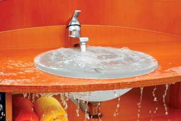
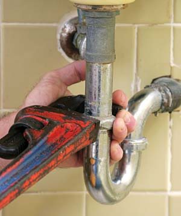
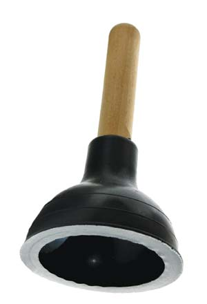
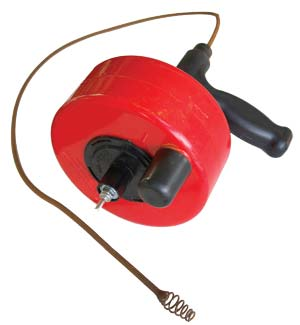
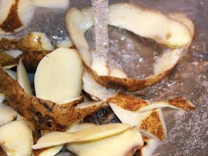

Drains are hidden heroes in your home. If you’re lucky, you can go for years without thinking about them, but when dirty sink water suddenly won’t go away or a toilet won’t flush, they can be a major frustration. A plugged drain certainly demands attention, but fixing it is probably something you can do yourself. You’ll get faster results than calling a pro, and you’ll save money, too.
Successfully unclogging drains depends on a few simple tools and knowledge of the layout of pipes hidden in your home.
Each drain connects with horizontal pipes that meet a vertical section of the system called the “stack.” The top of the stack goes through the roof, and acts as an air vent. The horizontal pipes travel down and out of your home, taking wastewater with them. Poor drain performance can be caused by problems in either the drain side of the equation or sometimes, the vent side. Even if water is free to flow through pipes, for proper performance the water must be replaced by air drawn into the system through the rooftop vent.
Certain parts of every drain system are prone to blockage, so it pays to understand where typical trouble zones might exist before an emergency arises.
Plugged drains are most likely to occur in three specific places: curved sections of pipes called “traps” that exist underneath sinks, tubs and showers; the internal passages within a toilet; or somewhere inside the main drainpipe leading away from your home.
Before you spend a lot of time trying to unplug a sink or toilet, and regardless of where the blockage seems to be located, start with a simple check: Run some water down the other drains in your house. Do the others flow freely? If not, your trouble probably involves more than meets the eye and could actually be part of a systemic problem.
Before you try to clear what looks like a small, localized blockage, take a quick look at the big picture. You’ll either know you’re on the right track or save yourself from wasting time trying to solve the wrong problem.
The most likely spot for a sink drain to clog is about 6 inches below the drain opening in a section of curved pipe called the trap. It’s an essential feature of every drain, but potentially troublesome, too. Traps keep nasty (and lethal) sewer gases from wafting up into your home by retaining small amounts of water in the U-shaped bottom section. This water seals the pipe opening so gases can’t sneak past. Curves of any sort in a drainpipe, especially as tight as those in a trap, encourage blockages. This is where the vast majority of sink, tub and shower blockages occur.
A blocked sink makes many people reach for a bottle of drain cleaner - but wait! Drain cleaning liquids are corrosive chemicals that work by dissolving the stuff that’s causing the blockage - hair, fat or built-up unidentifiable gunk. The problem is that any chemical has to be extraordinarily powerful to eat away any significant amount of this stuff, especially when the chemicals are diluted in a sink full of dirty water. Some drain cleaners are potent enough to make a superficial difference, but if they do, the blockage was probably minor in the first place.
It’s easy to eliminate the trouble using mechanical methods that don’t endanger the finish on your sink, your health or the environment. And what happens if you try a powerful drain cleaner only to find that it doesn’t work? Now you’ve got a caustic cocktail of chemicals in the sink that could cause damage as it splashes or drains out while you use other methods to clear the problem.
Instead of using chemicals, start by removing any strainer that might be part of the drain plug, then reach into the drain with your fingers and pull out any solids. This is not fun, but it’s often highly effective. If this doesn’t succeed, you need a sink plunger.
A sink plunger has a smooth bottom surface, as opposed to the extended lip that you’ll find on toilet plungers. With 2 or 3 inches of water in the sink to form a seal around the plunger, give the handle a few gentle pushes down and up. You’ll probably have to push harder and sharper to clear the blockage, but start gently to minimize splashes of water that could cascade out of the sink. If you’re successful, the dirty water will disappear quickly, often with a satisfying whoosh.
Is your drain still blocked? Now is the time to work under the sink. Chances are still good that the blockage is in the trap. Grab a bucket that’s as large as you can fit underneath the trap.
If your trap is the type with a drain plug at the bottom, remove it using a pair of slip-joint pliers. If it’s a drain-free trap (most are), use a pipe wrench to undo the threaded collars that hold the trap together. You’ll most likely be rewarded with a satisfying gush of gunky water as you remove the parts. If not, it’s time to dig deeper. Poke a flexible wire up into the drainpipe to loosen any offending gunk. Simple trap surgery of this kind usually solves the problem. If not, then the cause is further down the line.
Your last DIY option involves a drain snake. A drain snake (also known as a drain auger) is a long, flexible, metal device that bends around corners as you push it into a plugged drain.
Push the snake down the clogged pipe. When you hit an obstruction, turn the crank handle and the snake chews its way through. Basic snakes cost less than $50 and extend about 12 feet. You can rent longer professional models, both manually operated and those connected to an electric drill.
If the blockage isn’t near enough to the sink to reach with a snake, look for other places to gain entry to the pipe. Building codes require that drain systems include clean-out ports at strategic locations. Unscrew the cover to gain access to pipes for augering.
Although the pipe leading from a toilet doesn’t have a trap, the internal passages of the toilet act as a trap by holding water in the bottom of the bowl. These passages are usually where toilets get plugged.
Start by filling the bowl with enough water to seal around the rim of a toilet plunger. Put it in place over the opening in the bottom of the bowl, then work the plunger up and down. Go gently at first, there’s no point in sloshing filthy water around if a light touch will do the trick. Work up to a more aggressive pace if gentle plunges don’t work. If this doesn’t work and you have the option to wait, let the plugged toilet sit overnight. This sometimes softens the blockage, allowing the plunger to work even though it wouldn’t earlier.
If the blockage can’t be dislodged by a plunger, reach for a toilet snake, which is like an ordinary drain snake except it’s covered in protective rubber to prevent scratches to the toilet bowl finish. If all these options fail, then it’s possible the blockage exists past the toilet. Shut off the water supply to the toilet, drain the tank, remove the nuts that hold the toilet to the floor and lift the toilet. The large pipe at floor level offers a good place to work a drain snake down to dislodge the blockage.
Is your toilet a chronically slow flusher? There are several possible causes other than a partial blockage. Your toilet could be old, it could be bad or it could be both. Mineral deposits accumulating within passages of high mileage toilets often reduce flushing action significantly after 20 or 30 years of operation. Toilet replacement is the solution. Just be sure to install a low-flow model that has a proven track record of good performance. (Click here for a list of the best models.) The first generation of low-flow toilets never flushed properly, even when they were new. Your lazy flusher could be bad by design.
A blocked vent stack can also cause poor flushing because it fosters a temporary vacuum within the drainpipes. If fresh air isn’t allowed to replace the volume of water that moves through the pipe after a flush, then slow, ineffective action is the result. Code-compliant, plastic vent stacks rarely get plugged, but the old galvanized-metal stacks found in some homes grow progressively more plugged with rust as time passes. Eventually they close up. Try ramming a steel rod down the vent pipe from above. (You’ll need to get on the roof to do this.) Any blockage will be obvious.
If plunging or vent work doesn’t solve your toilet problem, then you’ve got two options. You can call a plumber who can use a power snake to auger out the drain, or you can rent a snake and do the job yourself. Either way, rest assured that you’ve got a serious blockage that would give anyone trouble.
If your original quick test revealed chronic clogs house-wide, or if you’ve noticed that your drains are getting slower and your house is connected to a septic system, the whole thing might be backed up. Leaching beds eventually fail because they get plugged with various material (fibers in laundry wastewater, etc.) and can’t leach any more. If this happens, the main drain leading from your house fills completely with water, causing all drains to stop and back up. Blockages in drainpipes leading underground to municipal sewage systems can also cause problems that may first appear in household drains.
If you trace your troubles to a main drain blockage, there are three typical causes. Tree roots may have penetrated older style pipes, leading to reduced flow or complete blockage. Soap sediment could also have hardened within a dip in the pipe. Occasionally main drains also collapse due to shifting soil or compaction, though this is rare.
Plumbing codes require a clean-out port to be located in the main drain just before it leaves your house. As you open this, be prepared for a flood. If the main drain is blocked, it could be holding back significant water in the pipes of your home. Get ready to catch it with tubs, garbage cans or several large buckets.
With the main cleanout open, start work by feeding a manual or power-driven drain snake into the pipe to see if it will clear the blockage. Main drains can be quite long, so make sure you’re properly equipped. If you find that soap sediment was the cause, consider switching to a liquid laundry detergent. They don’t settle out like laundry powders sometimes do in the stagnant dips present in some main drains.
There’s nothing fun about unclogging a drain, except for the feeling of success when you’re done. You’ll be satisfied to know you saved time and money, and confident you’ll be able to handle the next clog.
You may want to think twice about installing or using an in-sink garbage disposal in your kitchen. Garbage disposals operate by chopping up food waste and washing it down the drain, but there are three reasons why you shouldn’t do this.
The first has to do with closing the nutrient loop. The organic matter that enters your home should be returned to your soil where it can enhance plant growth. Diverting vegetable scraps into a household compost bin is a better option than sending scraps and peelings down a garbage disposal.
The second reason is the issue of sewage overload. Whether your house is hooked up to a septic system or a municipal sanitary sewer, the added strain of the organic matter from a garbage disposal really adds up. All that extra material was never meant to be dealt with in wastewater.
And third, sending chopped food waste down the drain increases the odds your pipes will become clogged!
Every so often I get a phone call from a friendly telemarketer offering an additive that promises to save money by eliminating the need to have my septic system pumped out. There are many similar products that promise wonderful, hidden benefits for the microbes living in a septic system, too. In all cases, I smile and say, “No, thanks.” I know how a septic system works, and no additive is going to improve things or rectify problems.
Your septic system is nothing but a tank connected to perforated pipes buried in the ground. As long as normal sewage goes in and the effluent is free to drain out of the perforations in the pipes, your septic system will work just fine. Regular pump-outs are necessary because a small portion of sewage entering the tank is always indigestible. As it settles to the bottom of the tank in the form of sludge, it slowly reduces tank capacity. This is the reason septic systems need to be pumped out every two or three years. No additive can make insoluble things soluble, and it’ll lead to trouble if you think otherwise. If you follow the advice of the folks who tell you that pump-outs can be eliminated, you’ll have sludge washing into your perforated pipes, clogging them and ruining your septic system’s drain field.
|
 ISTOCKPHOTO/MARTINEZ BANUS With the right methods, you can fix a number of plumbing issues yourself - and skip the plumber! |
 ISTOCKPHOTO/LISA F. YOUNG Any curve in a pipe increases the potential for blockage. Drain traps are one of the most common places for blockages to occur. |
 ISTOCKPHOTO/RON HOHENHAUS Plungers are another easy option to remedy clogs. |
|
 MATTHEW T. STALLBAUMER You can easily bore through many clogs with a drain snake. |
 STOCKPHOTOSPOT Putting food down an in-sink garbage disposal can increase your odds for clogged pipes, and put added strain on a septic system or municipal sanitary sewer. |
|